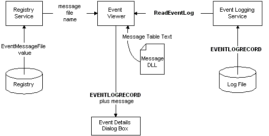

An event viewer application uses the OpenEventLog function to open the event log for an event source. The event viewer can then use the ReadEventLog function to read event records from the log. ReadEventLog returns a buffer containing an EVENTLOGRECORD structure and additional information that describes a logged event. The following diagram illustrates this process.

For example code, see Querying for Event Information.
Â
Â